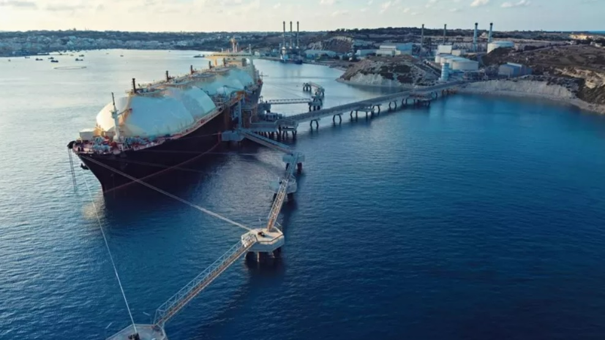
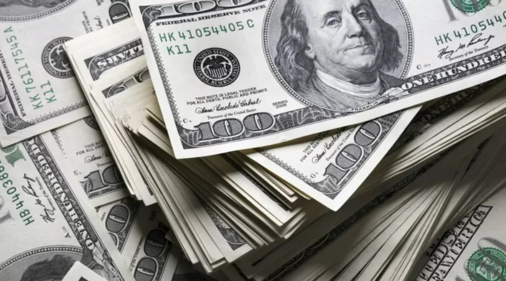

El Faro
Rusia y Ucrania: EE.UU. y Europa firman un acuerdo para limitar la dependencia energética de Moscú |
|---|
Categoría: Negocios |
|

Estados Unidos y la Unión Europea anunciaron una importante alianza sobre gas natural licuado en un intento por reducir la dependencia de Europa de la energía rusa. Según el acuerdo, EE.UU. proporcionará a la UE al menos 15.000 millones de metros cúbicos adicionales del combustible para finales de año. Es decir, el tratado sustituirá alrededor del 10% del gas total que Europa compra a Rusia. En respuesta a la invasión rusa de Ucrania, el bloque europeo ya había anunciado que reduciría su dependencia del gas ruso. Rusia actualmente suministra alrededor del 40% de las necesidades de gas de Europa. Esto supone alrededor de 216.000 millones de metros cúbicos, según las cifras de del departamento de Estrategia Empresarial, Energética e Industrial de Reino Unidoy, que revelaron que Europa consumió 541.000 millones de metros cúbicos de gas en 2020. Reducir la dependencia significará aumentar las importaciones y generar más energía renovable. El objetivo a más largo plazo es garantizar, al menos hasta 2030, unos 50.000 millones de metros cúbicos al año de gas estadounidense, frente a los 22.000 millones de metros cúbicos del año pasado. El acuerdo se anunció este viernes durante una visita de tres días del presidente estadounidense, Joe Biden, a Bruselas. Energía "para coaccionar". Biden y la presidenta de la Comisión Europea, Ursula von der Leyen, hablaron sobre la invasión rusa de Ucrania y ofrecieron un nuevo apoyo a Kiev. "Putin está utilizando los recursos energéticos de Rusia para coaccionar y manipular a sus vecinos", dijo Biden a los periodistas en Bruselas. "Ha utilizado las ganancias para impulsar su máquina de guerra". |
"Teléfonos tontos": el resurgir de los celulares no inteligentes en un mundo hiperconectado |
|---|
Categoría: Negocios |
|
Robin West, de 17 años, es una rareza entre sus compañeros: no tiene un teléfono inteligente. En lugar de hacer scroll por aplicaciones como TikTok o Instagram durante el día, esta joven utiliza el llamado "teléfono tonto". Son teléfonos básicos, con una funcionalidad muy limitada en comparación con un iPhone, por ejemplo. Por lo general, solo pueden hacer y recibir llamadas y enviar mensajes de texto. Si hay suerte, sirven para escuchar la radio y tomar fotos muy básicas, pero definitivamente no se conectan a internet ni a las aplicaciones. Estos dispositivos son similares a algunos de los primeros teléfonos que la gente compraba a finales de la década de 1990 La decisión de West de deshacerse de su antiguo teléfono inteligente hace dos años fue un impulso del momento. Mientras buscaba un teléfono de reemplazo en una tienda de segunda mano, se sintió atraída por el precio bajo de un "teléfono ladrillo". Su móvil actual, de la firma francesa MobiWire, le costó casi US$9. Como no dispone de la funcionalidad de un teléfono inteligente, no tiene que preocuparse por una costosa factura mensual de datos. "No me di cuenta de cuánto se apoderaba de mi vida el teléfono inteligente hasta que compré un ladrillo", asegura. "Tenía muchas aplicaciones de redes sociales y no trabajaba tanto porque siempre estaba en el teléfono". La joven londinense no cree que vuelva a comprar otro teléfono inteligente. "Estoy contenta con mi ladrillo, no creo que me limite. Definitivamente soy más proactiva". |
La Fed sube la tasa de interés 0,25 puntos en EE.UU.: por qué importa y cómo puede afectar a América Latina |
|---|
Categoría: Negocios |
|

La "era del dinero barato" ha comenzado a quedar atrás. La Reserva Federal de Estados Unidos (Fed) anunció este miércoles un aumento en la tasa de interés por primera vez desde 2018. El incremento de 0,25 puntos porcentuales marca un giro en la política de la Fed que había mantenido el costo del dinero casi en cero desde el inicio de la pandemia de covid-19. Con la decisión, las tasas en EE.UU. quedan en un rango de entre 0,25% a 0,5%. La medida busca amortiguar el rápido aumento de una inflación que ha escalado a un 7,9%, el nivel más alto en ese país desde 1982. Los tipos de interés estaban en mínimos históricos desde marzo de 2020 para tratar de estimular la actividad económica y salir más rápido de la recesión creada por el impacto de la pandemia. Pero ahora, con la guerra que se está librando en Ucrania y las expectativas de que el costo de la vida siga aumentando en EE.UU. y el resto del mundo, la subida de los tipos de interés, dicen analistas, era casi inevitable. "Estamos atentos a los riesgos de una mayor presión alcista sobre la inflación", dijo Jerome Powell, presidente de la Fed. "La economía estadounidense es muy fuerte y está bien posicionada para manejar una política monetaria más restrictiva", agregó Powell. El anuncio de la Fed es considerado como el comienzo del fin de una era en que pedir dinero prestado a los bancos fue muy conveniente. De hecho, es probable que el incremento anunciado este miércoles sea el primero de varios este año, señalan analistas, ya que la Fed adelantó que "los aumentos continuos en el rango objetivo serán apropiados". Con dos años de bajas tasas a nivel global, las personas, los inversores y los países que contrajeron deudas lograron tener acceso a dólares más baratos que los incentivaron a consumir o invertir, echando a andar los motores estancados del crecimiento económico. Pero ahora las cosas han cambiado. Y aunque la inflación ya estaba disparada desde antes de que comenzara la guerra en Ucrania el 24 de febrero, el conflicto les ha puesto mucha más presión a los países. ¿Por qué es importante? Es importante porque el costo de pedir dinero prestado tiene efectos directos en las personas al contratar créditos (como los hipotecarios o de consumo) o pagar deudas. También afecta a las empresas y los gobiernos que requieren financiamiento para realizar inversiones o renegociar compromisos financieros. Las decisiones de la Fed, equivalente al banco central en otros países, son esenciales para el rumbo de la economía. Las tasas más altas controlan la inflación, pero al mismo tiempo, reducen el crecimiento económico. Es por eso que un aumento de los tipos de interés forma parte de un complejo dilema: es mejor controlar la inflación y afectar el ritmo de crecimiento o es mejor mantener los motores del crecimiento encendidos pese al aumento del costo de la vida. ¿Cómo afecta a América Latina? La decisión de la Fed tiene el potencial de afectar las vidas de millones de personas en todo el mundo en desarrollo. "Que Estados Unidos suba los tipos de interés le afecta bastante a Latinoamérica", le dice a BBC Mundo Juan Carlos Martínez, profesor de Economía en la universidad IE Business School, España. "Hay más riesgo de que capitales que estaban invertidos en Latinoamérica se vayan a Estados Unidos, provocando una depreciación de las monedas locales y una mayor inflación", estimulada precisamente por esa pérdida de valor de las monedas de los países frente al dólar. Es por eso que muchos temen que la decidión de la Fed acelere una salida de capitales de la región hacia ese país, buscando mayores rentabilidades. Eso se explica porque si los grandes inversores consideran que comprar bonos estadounidenses (la deuda que emite el país para conseguir financiamiento en los mercados) es más atractivo, entonces le prestan menos dinero a los países de la región o le "compran deuda" a intereses más altos. Lo mismo ocurre con las grandes empresas que consiguen financiamiento externo: el costo de pedir prestado sube. Y, por otro lado, un dólar más alto hace que disminuya el poder adquisitivo de las personas, por ejemplo, al comprar bienes importados. Analistas anticipan que está comenzando una época de "dinero más caro" y, con la incertidumbre que provoca la guerra en Ucrania, las expectativas apuntan a que probablemente 2022 será un año de aumento progresivo de las tasas de interés en distintos países del mundo. Esa incertidumbre causada por el conflicto bélico hace que los capitales traten de refugiarse en el dólar, una moneda fuerte, contribuyendo a que el billete verde se aprecie respecto a las demás monedas. |